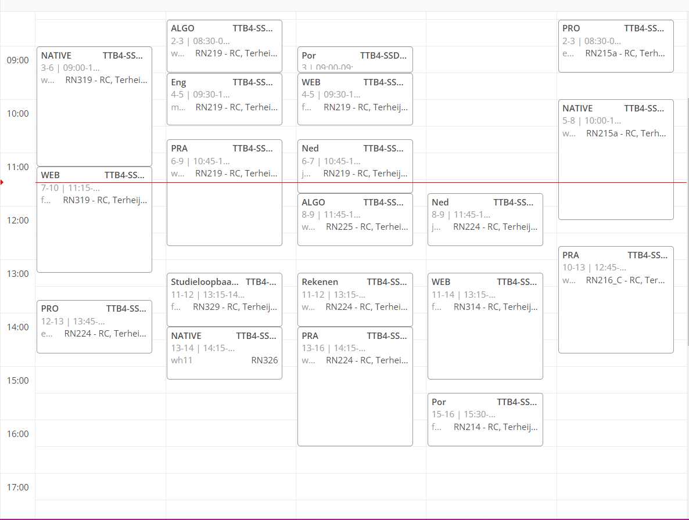
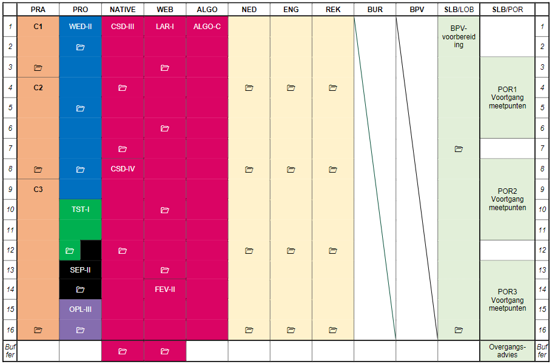
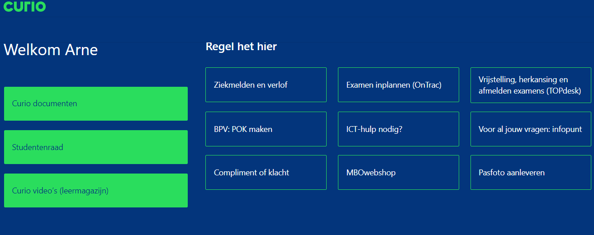

De vakken van software development
Op de opleiding software krijg je een aantal verschillende vakken. Sommigen gaan in op de kern van het programmeren, code schrijven. Anderen gaan meer over algemene vaardigheden en alles rond het code schrijven heen. Het coderen is verdeeld in 2 delen, “win” en “web”. Dit zijn de meest gebruikte termen en rooster afkortingen op de opleiding, ze staan voor “Windows-development” (alle applicaties die lokaal draaien) en “web-development” denk hierbij aan websites en online databases. Later in de opleiding krijg je de keuze in welke van deze vakken je gaat specialiseren.Natuurlijk zit je ook nog vast aan de kernvakken (rekenen, Engels en Nederlands). Echter als je daar al vaardig in bent kun je hier op eigen tempo doorheen werken en vroeg examen doen om vrijstelling te krijgen. Een groot deel van de rest van de vakken bestaat uit ondersteuning voor het programmeren. Zo leer je bijvoorbeeld hoe je presentaties kan geven of hoe je een website doelgericht maakt.
Bij win en web krijg je een hoop te leren maar dat moet ook in een “bedrijfssetting” worden geoefend. Dit doe je bij het vak ‘Praktijk’. Je gaat hier samen met anderen uit je klas apps en websites maken alsof ze echt voor een klant bedoeld zijn. Je houdt een interview met de docent die in dit geval de rol van opdrachtgever speelt en maakt het programma naar aanleiding van hun eisen. Het is erg belangrijk dat je goed samenwerkt en taken verdeeld om te zorgen dat de projecten tot een mooi einde komen.

Hoe ziet je rooster eruit?
Om al deze vakken te kunnen volgen moet je natuurlijk een rooster krijgen van school. Dit rooster kun je makkelijk bereiken via het studentenportaal (een web-app waar je onder andere je mail en rooster kan zien. Hier staan alle nuttige links die te maken hebben met school). Voor op je telefoon kun je ook de MyStapp app van Curio downloaden. Hier kun je het rooster en ook je aanwezigheid bekijken. Let wel op dat last-minute aanpassingen of ziekmeldingen hier niet altijd goed doorgevoerd worden.Om je rooster te kunnen zien op de web-app vul je de naam van je klas in. Wat ik persoonlijk erg praktisch vind is dat je hier ook de klas van je vrienden in kunt vullen om hun rooster te zien. Als je de juiste klas hebt gevonden krijg je het rooster te zien, per dag of per week. Afkortingje per les de begin- en eindtijd, de afkorting van het vak (bijvoorbeeld ‘pra’ voor praktijk), het lokaal en de afkorting van de docent. Van de docenten wordt typisch de eerste letter van de voor- en achternaam in combinatie met een nummer gebruikt. Hieraan kun je aflezen wie de les zal geven.
De opleiding in blokken
Ieder blok heeft een tijdsduur. Gewoonlijk begint een blok na de zomervakantie en loopt door tot begin februari. Na 2 bufferweken, één week toetsen en één week om alles af te maken mocht je dat niet al hebben gedaan, begint dan het nieuwe blok. Die loop dus van februari tot de zomervakantie. Op deze opleiding daarentegen start de opleiding ieder half jaar. Dus na de zomervakantie start blok A maar ook in februari. Mocht je blijven zitten kun je dat half jaar dus direct opnieuw doen. Ook instromen vanuit een andere opleiding is daardoor makkelijker.Aan het begin van het blok krijg je altijd een ‘blokboek’. Hierin staat ruwweg wanneer de feedbackmomenten (soms toetsen, soms inleveropdrachten) plaats zullen vinden. Ik zeg ruwweg omdat de kans natuurlijk bestaat dat er lessen uitvallen en er daardoor wat verschoven kan worden. Ook staat in dit online boekje aan welke eisen je moet voldoen voor het einde van het blok. Er staat bijvoorbeeld in welke praktijken opdrachten je allemaal gaat doen en wat je daarvan zou moeten opsteken. Je kunt hier ook de overgangsregeling terugvinden om zeker te weten dat je aan alles voldoet om naar het volgende blok te kunnen gaan.
Aan het einde kun je 1 van 3 adviezen krijgen van je SLB docent. De eerste is groen, de simpelste. Bij groen advies ben je over naar het volgende blok. De tweede is oranje. Hierbij vindt overleg plaats over wat de student zelf wil en wat de docenten hiervan denken. Je kunt in dit geval door met verbeterafspraken en eventueel het inhalen van een aantal niet ingeleverde projecten of je doet het blok overnieuw. De laatste is rood advies. Helaas, je hebt niet aan voldoende eisen voldaan om over te gaan en zult het dus nog een keer moeten doen.

